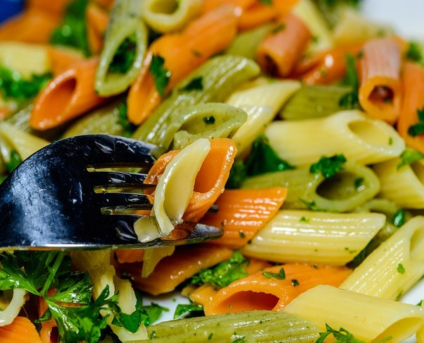

Ingrediente
Penne colorate-o jumatate de pachet
Ulei de masline-3 linguri
Patrunjel-2 legaturi
Usturoi-3 catei
Parmezan-pentru ornat
Rosii cherry-o ceasca, rosiile tocate jumatati
Sare si piper-dupa gust
Mod de preparare:
Intr-o tigaie pune uleiul la incins, adauga usturoiul maruntit si las-l pret de o jumatate de minut, cat sa nu se arda.
Opreste focul, amesteca pastele cu uleiul, adauga rosiile cherry si patrunjelul maruntit.
Serveste salata cu parmezan pe deasupra sau fara, cum iti place.